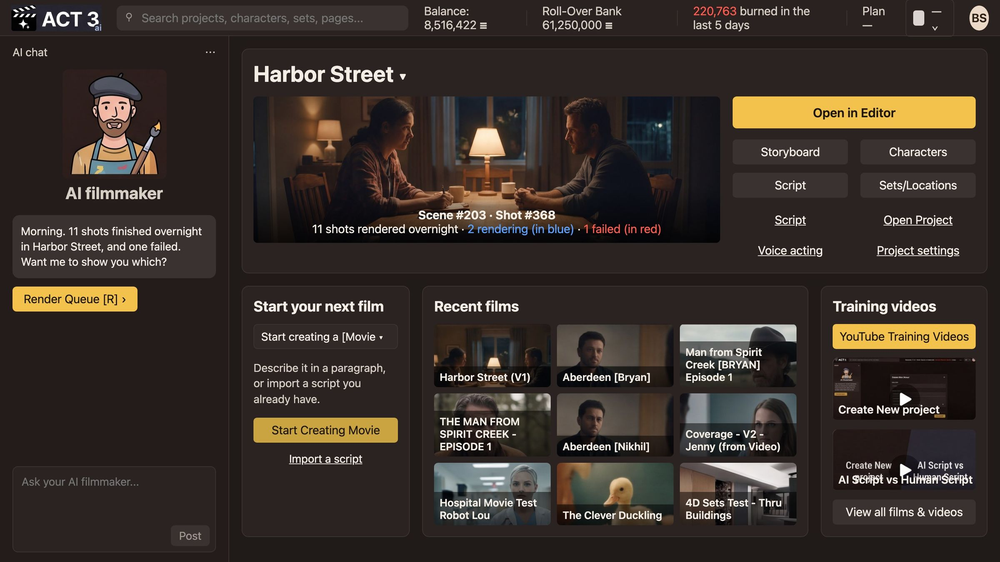

Step 1 of 8
Open Characters from Home
Start on Home, where your current film sits at the top. Click Characters, beside Storyboard under Open in Editor. The Characters page opens: your whole cast as faces.

What Home is for
Home opens on the film you worked on last. Its name sits at the top, with a preview frame and the buttons that open each part of that film: Open in Editor, Storyboard, Characters, Script and Sets/Locations.
- Check the film name at the top. If it is not the film you want, click the name to switch films.
- Click Characters. The Characters page opens.
What the Characters page shows
Every person in this one film, as a wall of headshot tiles. Each tile carries the character's name, their job in the story and how many scenes they are in. Checkboxes at the top filter by importance: Main characters, Secondary characters, Supporting cast and Less frequent.
The yellow Add character button at the top right is the one you will use in step 3. The narrow bar on the right shows the selected character's full body, their voice and an Open › button.
Other ways in: the AI filmmaker chat on almost any page offers a Character › button, and the Go To menu in the top bar lists Characters too.
Why you go next to one character
Before you add someone new, it helps to see what a finished character looks like. Step 2 opens one.